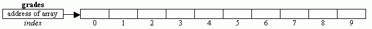
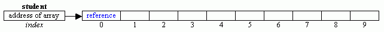
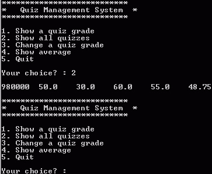
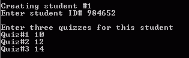
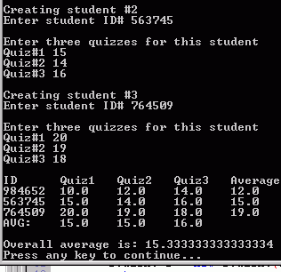

To
gain experience with:
An array is a contiguous list of memory cells that
can be identified using a single variable.
An array is declared as shown below
int[] grades = new int[10];
The above can also be broken into two steps:
1. Declaration
of the array: int[] grades;
This declares a reference variable for an integer
array (a variable that can hold the address of an integer array).
|
grades |
|
|
2. Creation
of the array object: grades =
new int[10];
This creates the array object in the memory (just
like any object) and stores its address in the reference variable grades.

Notice that the index of an array begins from zero and ends one less than the
size. Any attempt to access elements outside this
range will make the java interpreter to throw ArrayIndexOutOfBoundsException.
Once an array is created, its individual elements
can be accessed by using the array name followed by the index in square
brackets. Example, to assign 15 to
element number 6, we write:
grades[5] = 15;
Each array has an instance final variable length that holds the size of the
array. This is very useful if we need
to access each element of the array.
For example, the following for loop initializes each element of the
array to its index:
for (int i = 0; i < grades.length; i++)
grades[i]
= i;
If we have the values to be assigned to an array are
known, then an array can be created using initializer list as follows:
char[] vowels = {‘a’, ‘e’,
‘i’, ‘o’, ‘u’}
This declares and creates a character array of five
elements and initializes it with the vowel characters. Notice that in this case, the size is not
specified and the new operator is not used.
The compiler automatically counts the elements, creates an array of the
appropriate size and fills the array with the elements.
We can also create array of objects. For example, the following declares an array
to hold 10 student objects:
Student[] student = new
Student[10];

However, unlike array of primitive types where
primitive values are stored directly into the array cells, array of objects is used to store the
references to the objects. For example,
to store a reference to a student object in the first cell of the array, we
create the student object as follows:
student[i] = new Student(. . .);
Example 1: The following creates two array and prints their
vector and dot products. Notice that the
method vectorProduct() method receives
two array parameters and returns another array – the vector product of the two
arrays.
public class Vector {public static void main(String[] args) { double[] x = {5, 2, -3, 4, -2}; double[] y = {2, 3, 5, -4, -6}; double[] z; z = vectorProduct(x, y); System.out.println("The vector product is: "); for(int k = 0; k < z.length; k++) System.out.print(z[k] + " "); System.out.println("\n\nThe dot product is: "+dotProduct(x,y)); } public static double[] vectorProduct(double[] a, double[] b) { double[] t = new double[a.length]; for(int i = 0; i < a.length; i++) t[i] = a[i] * b[i]; return t; } public static double dotProduct(double[] a, double[] b) { double sum=0; for(int i = 0; i < a.length; i++) sum = a[i] * b[i]; return sum; } } |
Example 2: The demonstrates array cloning.
public class ArrayCloning {public static void main(String[] args) { int k; double[] x = {5, 2, -3, 4, -2}; double[] y = new double[5]; double[] z = {10, 25, 30, 45}; double[] w; y = x; // y and x refer to the same object. The object that was referenced by y is lost System.out.println("The array referenced by y is: "); for(k = 0; k < y.length; k++) System.out.print(y[k] + " "); x[0] = 200; x[4] = 66;System.out.println("\n\nThe array referenced by y is: "); for(k = 0; k < y.length; k++) System.out.print(y[k] + " "); w = (double[])z.clone(); // w and z refer to different objects z[0] = 88; z[2] = -99; System.out.println("\n\nThe array referenced by w is: "); for(k = 0; k < w.length; k++) System.out.print(w[k] + " "); } } |
Example 3: The following examples shows
that we can have array as an instance variable. It also shows how array instance variable may be initialized by a
constructor. Notice that the Student
class is in its own separate file.
class Student {private int iDNumber; double[] quiz; public Student(int iDNumber, double[] quiz) { this.iDNumber = iDNumber; this.quiz = quiz;} public int getID() { return iDNumber; } public double getQuiz(int quizNumber) { if(quizNumber >= 1 && quizNumber <= quiz.length) return quiz[quizNumber - 1]; else return -1.0; } public void setQuiz(int quizNumber, double quizGrade) { if(quizNumber >= 1 && quizNumber <= quiz.length) quiz[quizNumber - 1] = quizGrade; } public double sum() { double sum = 0; for(int k = 0; k < quiz.length; k++) sum += quiz[k]; return sum; } public double average() { return sum() / quiz.length; } public String toString() { String s = ""+iDNumber; for (int i = 0; i<quiz.length; i++) s += "\t"+quiz[i]; s += "\t"+average(); return s; } } |
import java.util.Scanner; public class TestStudent {public static void main(String[] args) { double[] quiz = {50, 30, 60, 55}; Student student = new Student(980000, quiz); /* destroy the object referenced by quiz, so that the only way to obtain quiz information is from the object referenced by student */ quiz = null; System.out.println("Student information before changing grade:"); System.out.println(student); student.setQuiz(3, 90); student.setQuiz(4, 75); System.out.println("\nStudent information after changing grades:"); System.out.println(student); } } |
Example 4: The following example shows how
to use array of objects. It uses
the same Student class as in example 3 above to create an array of three
students objects, each one having ID number and three quizzes. The Program then prints the average of each
students and the overall average for all students.
import java.util.Scanner; public class TestStudent2 {static Scanner stdin = new Scanner(System.in); static final int STUDENT_COUNT = 3, QUIZZES_COUNT = 3; public static void main(String[] args) { Student[] student = new Student[STUDENT_COUNT]; double sum=0; for(int i = 0; i < student.length; i++) { System.out.println("\nCreating student #"+ (i+1)); student[i] = createStudent(); } System.out.println("\nID\tAverage"); for(int i = 0; i < student.length; i++) { System.out.println(student[i].getID()+"\t"+student[i].average()); sum += student[i].sum(); } System.out.println("\nOverall average is: " + sum/(STUDENT_COUNT*QUIZZES_COUNT)); } static Student createStudent() { int id; double[] quiz = new double[QUIZZES_COUNT]; System.out.print("Enter student ID# "); id = stdin.nextInt(); System.out.println("\nEnter three quizzes for this student"); for (int i=0; i<quiz.length; i++) { System.out.print("Quiz#"+ (i+1)+ " "); quiz[i] = stdin.nextDouble(); } Student s = new Student(id, quiz); return s; } } |
1. Modify example 3 so that after the array is created
(as in example 3), it displays a menu that allows the operations shown in the
following figure to be performed in a loop until the Quit option is chosen.

Note: If the first option is chosen, your program
should prompt for and read a quiz number.
It then calls the getQuiz() method to print it. If option 3 is chosen, your program should
prompts for and read the quiz number and the new grade for that quiz. It then calls the setQuiz() method to
change the grade and then display the updated student information.
2. Modify example 4 as follows:
·
Add another method, static double quizAverege(Student[]
student, int k) that receives an
array of student objects and a quiz number as parameters. It then returns the average for that quiz.
·
Now modifies the main
method so that it prints :
o
the ID number, grades
and average of each student in a tabular form
o
the average of each each
quiz
o
the overall average for
all students.
 
3.
Ahmadu Bello University Press wants to know the maximum, minimum, total, and average profit gained from years 2005 to 2014.
Besides that, they are interested in knowing the difference between the maximum and minimum profit and those profits that are above average.
The profits are as follows.
Year Profit(₦) 2005 5,000,000.34 2006 2,005.000.00 2007 3,020,000.97 2008 5,057,800.20 2009 4,500,000.67 2010 5,000,000.00 2011 3,048,900.56 2012 4,800,000.50 2013 2,980,000.71 2014 4,909,000.80
(a) Create a class called Profit that has the following members
(b) Create a test class that will instantiate the Profit class and display the required results with suitable headings and labels